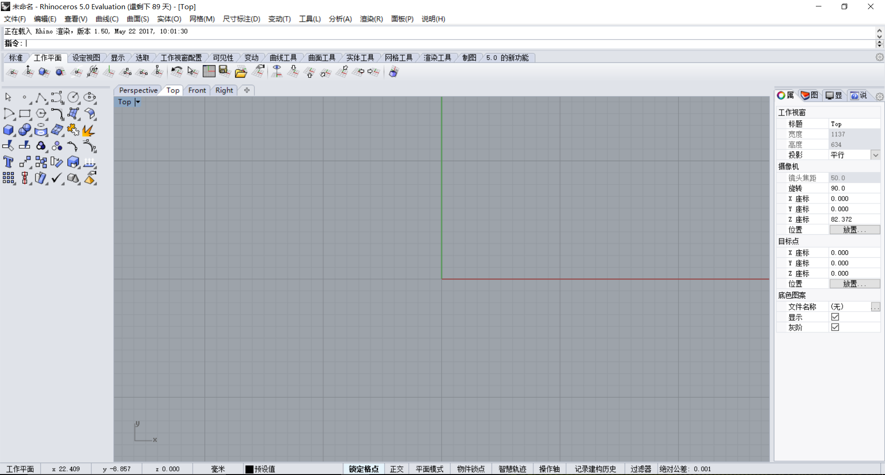
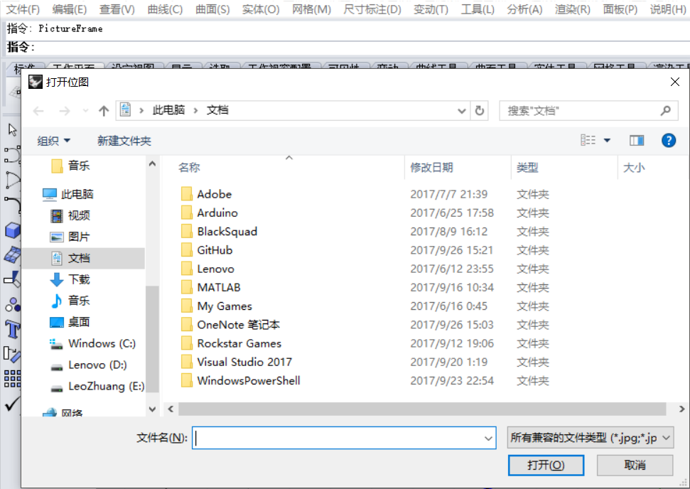
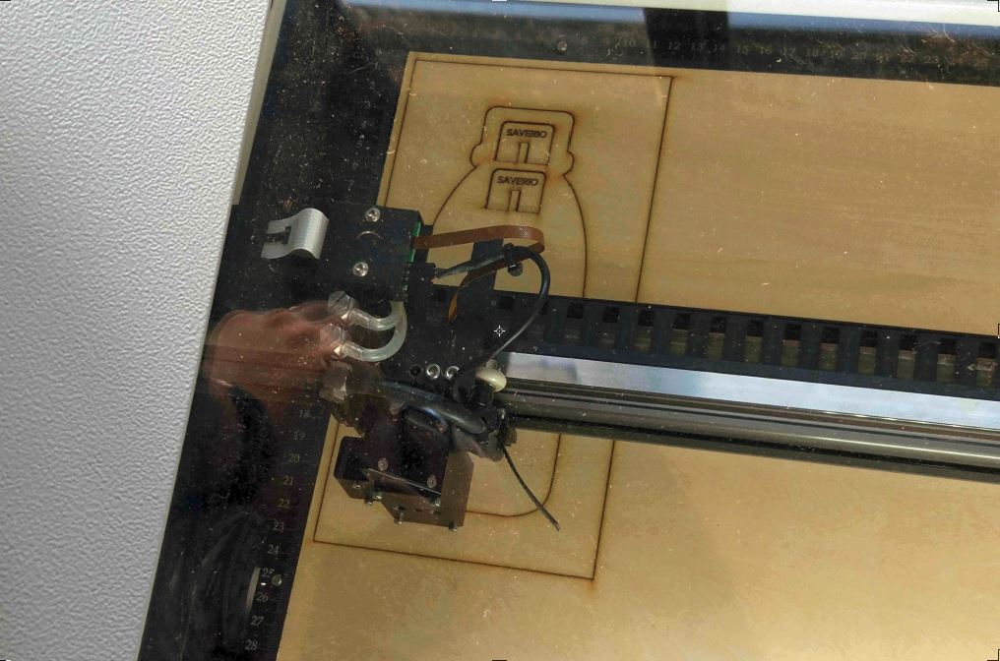
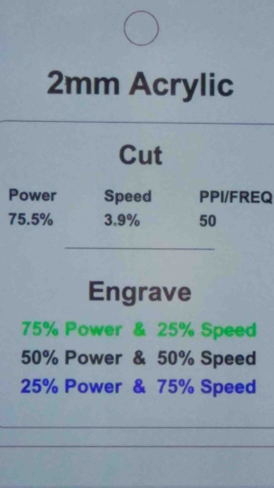
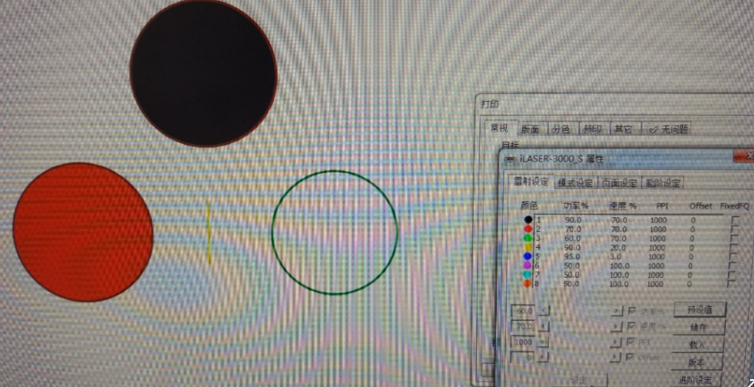
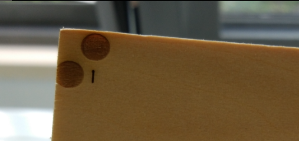
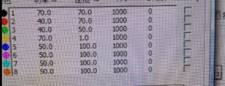
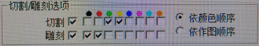
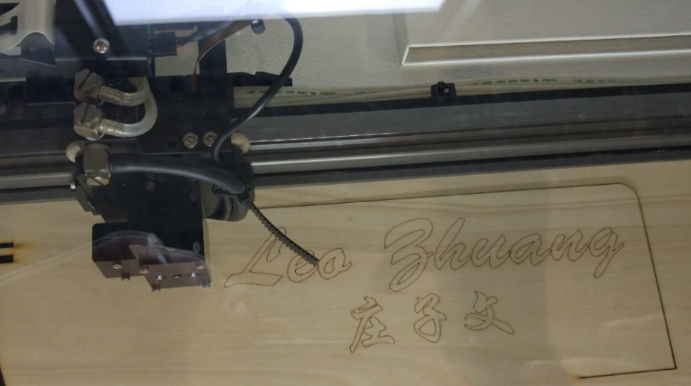

Doucments on the second week:
how to use the Rhino5 to design a 2-D pattern:
First turn on the Rhino5 and choose the 90-day trial. As we just design a 2D pattern, we can just click on the top view.
If darwing lines based on a jpg picture, we need to type the command "pictureframe" and press Enter, since the Rhino can not import the jpg file.
Then here we come to the laser cutter
The model of this laser cutter is ilaser 3000, which is a revolutionary product that can do both cut and carve work. And here are the simple 5 steps on operating the laser cutter.
1, turn on the laser cutter; 2, inser a sheet of the material; 3, focus the laser head; 4, Send the file from PC to the laser cutter; 5, Use laser cutter control panel to start cutting.
Then you will see I'm just kiding. Operation such a power mechine cannot be so easy. To be brief, here is the recommended settings for using the laser cutter:
When we are making a name stand:
First, we have to find the thickness of the wooden board and the kerf that the laser will make. So, I desgined a patter to test it.
 Ther result doesn't seem fine enough, which turns out that drawing a line has to be in the cutting mode. Or it will do like a printer scanning from left to right again and again. After several trials, the avaliable settings are down below:
 Now the settings for this specific wooden board is done, and the kerf is about 0.2mm. So we set the width of the groove to 4.35mm, which makes a perfect match of the board and the groove.
